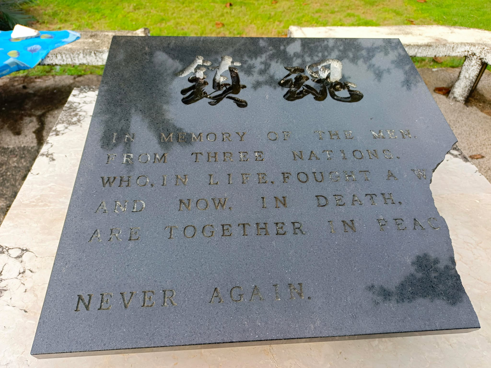
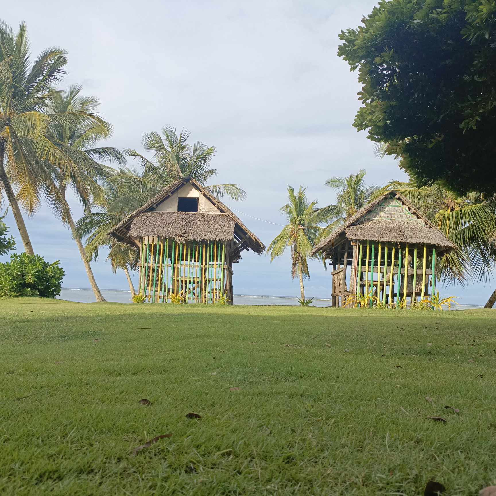

Dumpao Beach
Dumpao Beach is a calm and spacious shoreline in Sapao that attracts visitors seeking a quiet day by the sea. Its simple cottages, open-air setting, and peaceful atmosphere make it suitable for family trips, beach picnics, and community gatherings.
Local stories remember the area as a place shaped by typhoons, resilience, and community rebuilding. Even after the destruction caused by Typhoon Yolanda, Dumpao remained a meaningful place for residents and visitors alike.

Photo gallery



Fees and access
Pricing
Basic cottage rentals are available and rates may vary depending on size and season. It is best to ask locally for the latest pricing before planning a visit.
How to get there
From Guiuan town proper, head toward Barangay Sapao by road and continue to the beach area with the help of local guides or residents. The journey is straightforward and usually takes a short amount of travel time.
Contact and opening hours
Most visits are daytime outings, and guests are encouraged to coordinate with local caretakers or residents for cottage availability and current conditions.